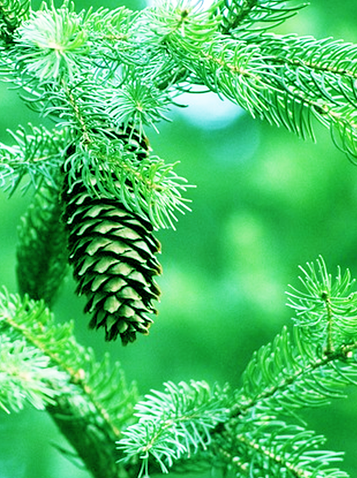

マツ科マツ属の常緑高木の総称。明るく乾燥した地に生え、樹皮はひび割れするものが多い。葉は針状で、ふつうアカマツ・クロマツなどでは2本、ゴヨウマツ・チョウセンゴヨウ・ハイマツなどでは5本が束になって出る。春、球状の雌花と雄花とがつき、黄色い花粉が風に飛ぶ。
PINE
General term of an evergreen tall tree of the pine family pine genus. I grow at the place which dried brightly, and there is a lot of one which cracks for bark. Like a needle, 2 5 bunch up and go out by a Japanese white pine CHOUSENGOYOU high pine by an ordinary Japanese red pine Japanese black pine for a leaf. Spring, a globular female flower and a male flower stick, and yellow pollen flies to a wind.

matsu01_PT
13/27